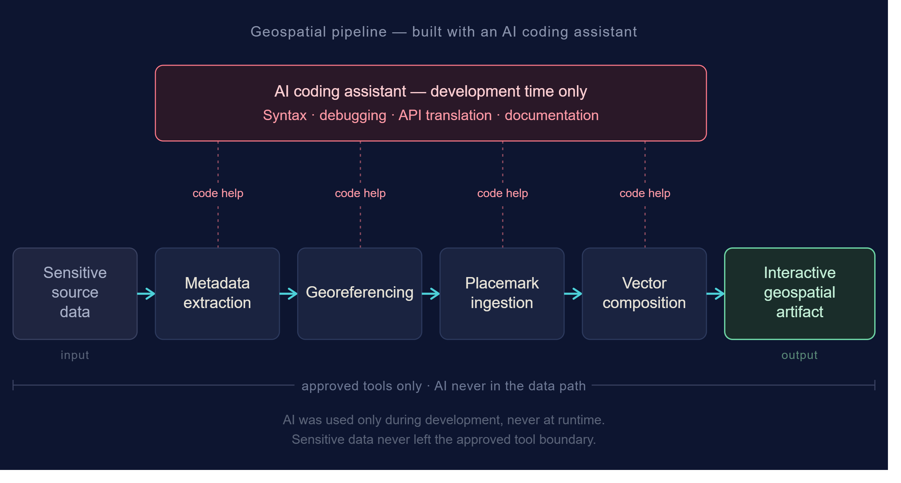
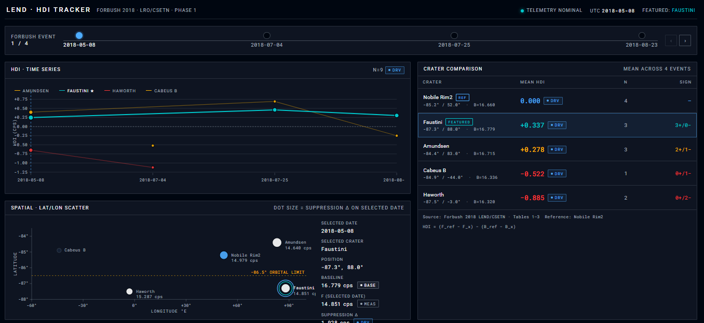

Systems Design Portfolio
I design across the full stack of decision systems — from interface surfaces to underlying data transformation workflows
Selected Systems
-
Identity & Authentication System (Truist)
Multi-state onboarding and authentication flows across millions of users
-
Enterprise UX System Modeling (EPRI)
Field-tested utility workflows + operational analytics systems in regulated environments

-
Geospatial Intelligence Workflow (Johns Hopkins APL)
Translated sensitive geospatial data, operational constraints, and stakeholder requirements into a structured geospatial workflow, defining system architecture from metadata extraction through interactive map generation while ensuring governed handling of source information.

-
Environmental Data Fusion Pipeline (VCU / NASA LEND)
Multi-source satellite + sensor data structured into interpretable decision signals
